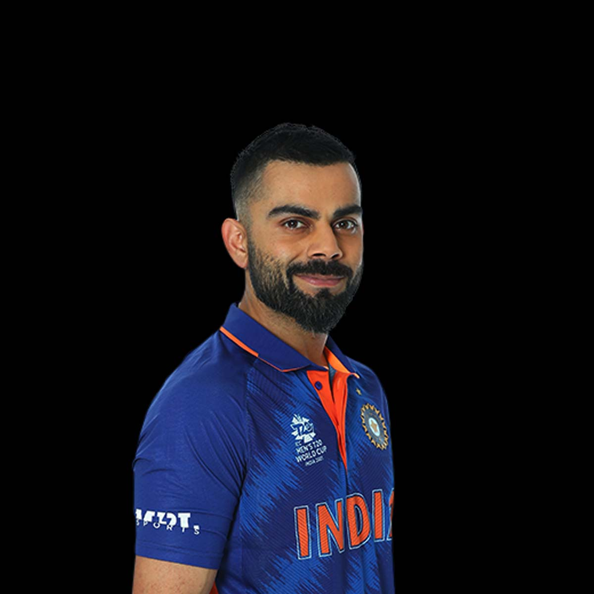

Virat Kohli
LIFE OF VIRAT KOHLI
Virat Kohli was born on 5 November 1988 in Delhi into a Punjabi Hindu family. His father, Prem Nath Kohli, worked as a criminal lawyer, and his mother, Saroj Kohli, served as a housewife. He has an older brother, Vikas, and an older sister, Bhawna.[9] Kohli's formative years were spent in Uttam Nagar. He commenced his early education at Vishal Bharti Public School.[10] According to his family, Kohli exhibited an early affinity for cricket as a three-year-old. He would pick up a cricket bat and request his father to bowl to him.
About The Legend
- Virat Kohli (born 5 November 1988) is an Indian international cricketer who plays Test and One Day International (ODI) cricket for the Indian national team.
- He represents Royal Challengers Bengaluru in the Indian Premier League (IPL) and Delhi in domestic cricket.
- He holds the record as the highest run-scorer in IPL, ranks third in T20I, third in ODI, and stands as the fourth-highest in international cricket. He also holds the record for scoring the most centuries in ODI cricket and stands second in the list of most international centuries
- Viart kohli a number of successful cricketer, which helped earn him the nickname “King Kohli.”
- A Man of the Match or Player of the Match award is given to an outstanding player, almost always the one who makes the most impact in the match. The term was originally used in cricket before being adopted by other sports.
- Kohli was honoured with the Arjuna Award in 2013, the Padma Shri in 2017, and India's highest sporting honour, the Khel Ratna Award, in 2018. In 2018, Time magazine included him on its list of the 100 most
- Kohli is considered as an enterprising batsman, possessing technical abilities and a dynamic playing demeanour. His customarily batting position in ODl cricket is at number three, with a slightly open-chested stance, and a resolute grip on the bottom handle of his bat.
- He is appreciated for his ability to execute wrist shots and his consistent prowess in the mid-wicket and cover region.